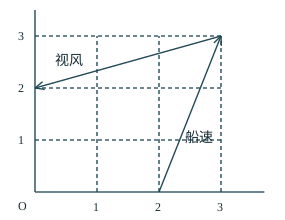
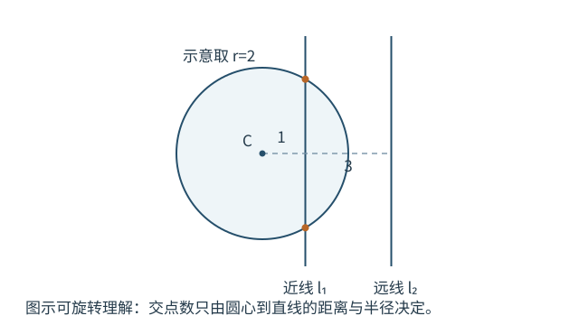
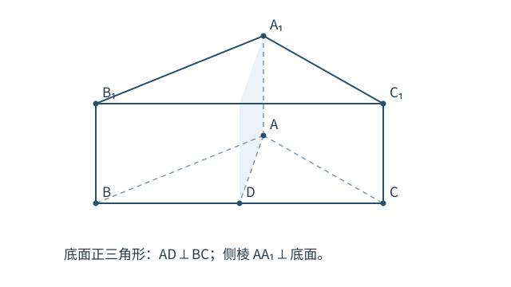
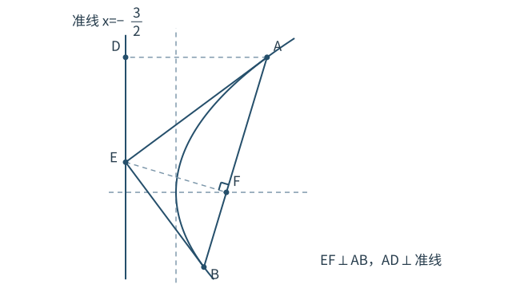
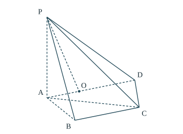
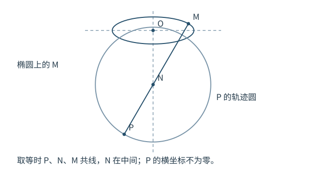
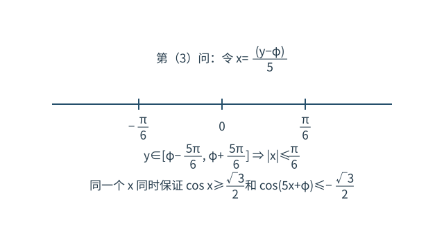

第 1 题 复数的虚部
题目
求 的虚部。所用高中知识
复数标准形式 ；虚数单位满足 ；虚部是实数 。
读题与思路
要找的是虚部，先把乘积化为标准形式，不能直接把含 的整个项当作虚部。
第 1 步 展开乘法并化简
第 2 步 对照定义
，所以实部是 ，虚部是 。
答案与检查
选 C，虚部为 。虚部指虚数单位前的实数系数，而不是含虚数单位的整项。
19 题完整解析 · 所用高中知识 · 读题与思路 · 分步计算与证明 · 答案与检查
本册保留所用 A 卷扫描题干与选项顺序，依据新版逐题解析重新编写。全部解法限定在高中知识范围，重点补足方法理由、计算过程、分类与取等检查。公开扫描及教学解析不是考试机构审定的评分细则。
复数标准形式 ；虚数单位满足 ；虚部是实数 。
要找的是虚部，先把乘积化为标准形式，不能直接把含 的整个项当作虚部。
，所以实部是 ，虚部是 。
选 C，虚部为 。虚部指虚数单位前的实数系数，而不是含虚数单位的整项。
正整数；有限集合的表示；相对于全集的补集。
补集的范围由全集决定。先落实“正整数”和“小于 ”，再删去属于 的元素。
不是正整数， 不满足“小于 ”，两者均不在 中。
该集合有 个元素。
选 C。因为 ，也可用 复核；补集与 不相交，二者并集恰好是 。
双曲线的实轴长 、虚轴长 ；；离心率 。
题目给轴长的比，要求离心率。轴长比等于对应半轴比，因此先把根号保留完整地写成 。
这里 ，所以取正的平方根。
选 D，，符合双曲线离心率大于 的性质。不要把虚轴长的“ 倍”读成“ 倍”，也不要使用椭圆的参数关系。
正切的奇性、周期和定义域；中心对称；两角和差公式。
对称中心未必是图像上的点，渐近线与横轴的交点也可能是中心。直接验证中心两侧的函数值互为相反数，可以把中心列全。
令 。对两侧都有定义的 ，点 是中心要求 由和差公式， 该式对所有合法的 恒为零，当且仅当 ，即 ，。
当 时，，因而 两侧分母同时为零或同时非零。因此排除渐近线后的定义域也关于 对称，上述条件确实充分。
所有中心的横坐标为 若 ，则 ；若 ，最小值在 取得。
选 B，。正切型函数的对称中心既包括图像与横轴的交点，也包括渐近线与横轴的交点，两类合起来才是全部对称中心。
偶函数 ；周期为 时 ；分段适用范围。
解析式仅在 内成立。目标横坐标 不在该区间，先用偶性反射，再用周期平移。
由于 ，现在可以使用题给解析式。
选 A，。也可以先加 得 ，再利用周期与偶性转到 ；无论怎样变换，最终代入点都须处于给定区间。

向量的加减；相反向量；向量坐标为终点坐标减起点坐标；向量模。
用 分别表示视风、真风、船速。船行风为 ，所以题设是 ，所求为 。
注意视风的终点是 ，反向读取会改变结果。
，所以属于轻风。
选 A。回代向量等式：，与视风一致；风的类别取决于模，而非任一坐标分量。
点到直线的距离；圆心、半径；直线与圆相离、相切、相交的判定。

对点 ，距离条件是 因此 ，即
圆心为 ，于是
| 半径 | 近线交点数 | 远线交点数 | 总数 |
|---|---|---|---|
| 0 | 0 | 0 | |
| 1 | 0 | 1 | |
| 2 | 0 | 2 | |
| 2 | 1 | 3 | |
| 2 | 2 | 4 |
两条平行线不同，因此交点不会重复计数。
选 B，。两个端点都不能取： 只有一个点， 有三个点。
对数与指数互化；指数函数的单调性；分类讨论；用实例说明可能性。
三个对数表达式相等，设共同值为 ，就能用同一个参数表示 。只需证明 B 的排序永不发生，再核验其余选项确有实例，不必求所有交叉点。
对数有意义要求 。令共同值为 ，得
若 ，因为 且 ， 所以 ，不能有 。
若 ，因为 ， 所以 ，也不能有 。两种情况覆盖所有实数 。
时 ，对应 A； 时为 ，对应 C； 时为 ，对应 D。
选 B。证明某种排序“不可能”必须对所有参数成立，举特例只能说明某种排序“可能”。
正三棱柱的底面为正三角形、侧棱垂直底面；中线与高；线面垂直、线面平行判定。

。又 平面 ，所以 。直线 在平面 内相交于 ，故 B 正确。
，而 在平面 内。平面 与底面的交线是 ，，所以 不在该平面内。于是 也不在该平面内，由线面平行判定得 D 正确。
已经有 。若再有 ，因为 与 相交，便得 平面 ，从而 。但正三角形中 ，矛盾。A 错误。
。若 ，便有 ；但 相交且不重合，所以 C 错误。
选 BD。两条相交直线是线面垂直判定的必要使用条件；线面平行还必须排除直线位于平面内。
抛物线定义、焦点和准线；直线与抛物线联立；根与系数关系；三角形面积公式。

的焦点为 ，准线是 。由定义，，所以 A 正确。
设 。代入抛物线得 设根为 ，则 两根异号，所以 位于弦 内。
由焦半径公式，、，因此 时可取等号，故 C 正确。
取 ，得 、、。于是 B 错误。
的方向向量为 ，与之垂直的方向为 。从 到准线 ，横向变化为 ，故 是 以 为底时的高。两种面积式给出 因为 ， 时 ，乘积确为 ，所以 D 正确。
选 ACD。参数包含了达到最值的竖直弦；乘积下界不仅被证明，而且给出了可行的取等情形。
三角形内角和；二倍角、和角公式；锐角三角函数；面积公式、勾股定理。
先把第一式改为正弦平方的关系，第二式保证 均为锐角。再比较 与 ，由矛盾迫使 为直角，这样各边和三角函数都容易计算。
由 及相应的 式， 所以 A 正确。
三角形内 ，由 得 。 不能同时为钝角，也不能为直角，所以只能同时为锐角。
若 ，则 、。因正弦在锐角范围递增， 分别乘正数 后相加，得到 与第 1 步矛盾。若 ，同理两个不等号都反向，仍与第 1 步矛盾。因此 ，。
记 。面积给出 ，即 。又 所以 。因此 ，B 正确；，D 错误。
互余，故 ，且 。于是 正弦和为正，故为 ，C 正确。
选 ABC。判断 A 后仍需用第二条件和内角范围，不能直接把正弦平方关系当成 的理由。
指数函数求导；切线斜率等于切点处导数；切点同时在直线和曲线上。
导数可以求切点横坐标，但常数 求导后消失，还必须用切点坐标确定 。
设切点横坐标为 ，曲线的导数为 。切线斜率为 ，所以
直线 在 时纵坐标为 。代入曲线得
。此时曲线经过 ，并且导数为 ，故切线确为 ，两个切线条件均满足。
等比数列通项关系；前 项和；由偶次幂方程求实数根。
题给前 项和和前 项和，将后四项与前四项逐项比较最直接，无需先引入首项。
设公比为 ，则 ，所以
由公比的四次方等于 16，得 。题目没有各项为正的限制，不能排除负公比。
公比为 ，两个值都能实现题给的部分和：
两种情况下都有
故两个根均成立。
分步乘法计数；组合数；古典概型；离散型随机变量的分布列与数学期望。
统计出现过的不同号码数，三次抽取只能产生 。有放回使每次均有 种可能，故 个有序结果等可能。直接分类计数即可。
表示三次同号，只有 共 种，故 表示三次互异，依次有 种选法，故
先从 个号码选出出现的两个，共 种。每个位置可取这两个号码之一，共 种排列，扣除两个号码各自三次全同的 种，剩 种。因此
。概率和为 ；计数总数 ；期望在 内。
| 组别 | 正常 | 不正常 | 合计 |
| 患病 | 20 | 180 | 200 |
| 未患病 | 780 | 20 | 800 |
| 合计 | 800 | 200 | 1000 |
用频率估计概率；条件概率； 列联表；题给独立性检验统计量及临界值。
第（1）问只在“检查不正常者”中算患病比例；第（2）问则利用整个列联表判断统计关联。这两个分母和任务不同，应分别处理。
检查不正常者共 人，其中患病者为 人，故 不能用总人数 作分母，那会得到另一个事件的概率估计。
设 为“超声波检查结果与是否患该疾病相互独立”。按表中顺序取
四个分母因子分别对应表的两行和与两列和，均为正。
在小概率值 下，题给临界值为 。因为 所以拒绝 ，可以认为检查结果与是否患病存在统计关联。
（1）估计值 ；（2）在题给检验水平下认为有关。行列和均与 人一致。检验结论不是因果证明， 也不是某个检查者患病的概率。
等差数列；等比数列求和；有限和的错位相减；多项式逐项求导。
清除递推式的分母，恰好出现相邻的 与 。求导又把 变为 ，所以两问共用同一个变换。
原式两边同乘正数 ，得 即 的相邻项之差恒为 ，首项 ，所以它是首项 、公差 的等差数列。
记 ，则
把上式乘 ，再用原式减去新式。中间同次幂的系数相差 ，首、末项单独保留： 对 ，有限等比求和得 当 时左侧为空和 ，右侧也为 ，公式仍成立。
（1） 首项 、公差 ；（2） 时结果为 ； 时为 ，与直接求导所得 一致。等差的是 ，不是 。

线面垂直与面面垂直判定；空间直角坐标；球心到球面上各点等距；空间向量数量积。
第（1）问在平面 内找一条垂直平面 的直线。第（2）问以三条已知互相垂直的棱为坐标轴，通过平方距离相减求球心，最后求直线夹角。
由 平面 ，得 ；又已知 。 在平面 内相交于 ，故 平面 。
因为 平面 ，所以平面 平面 。
以 为原点， 的方向依次为 轴的正方向，得 设球心为 。注意题目只给 在球面上，不能添加 。
平方相减后公共项消去，得
代入 ，由 得 故 。再由 ， 故 。因此 ，在底面所在平面 上，且 ，实际位于边 上。
可取方向向量 点积为 ，模分别为 、。直线所成角取 内的角，故
（1）两平面垂直；（2）球心在底面上，余弦值为 。代回可得 ，而 ，再次确认不能把 当作球面点。
椭圆标准方程、离心率；向量共线与正比例；斜率；圆方程；配方法；三角形两边之和大于等于第三边及等号条件。
用离心率和顶点距离确定椭圆。射线条件要用正比例系数表示；斜率条件再得到 的圆轨迹。求最远距离时先固定椭圆点，把圆半径与它到圆心的距离相加，最后检查两次取等能否同时成立。
，所以 。由 及 ，有 。联立得
设 ，，记 。由 在射线 上且 ，可设 于是 ，所以 这也可写成 。
保证 的横坐标都非零，因此两个斜率都存在。题意给出 等价化简得 ，再代入 的定义，得到 所以 在圆心 、半径 的圆上，但要删去与 轴的两个交点。上述变形均可逆，故未引入其他点。

取 ，再取 此时 ， 的横坐标非零，且 共线、 在中间。因此两处不等式同时取等。
（1）；（2） 坐标如第 2 步， 的最大值为 。取等时没有落入被排除的 轴点；R 在射线 AP 上要求比例系数为正。
三角恒等变换；余弦的周期、偶性和单调性；导数求区间最值；分类构造；恒成立不等式与最值的量词。
第（1）问在指定区间求最大值；第（2）问为第（3）问提供一个可以选择的角。第（3）问必须做两件事：任何相位都要求 不小于某值；确实有一个固定相位，使这一值对所有 成立。
在 内 ，而 在 前正后负。因此 在 上递增，在 上递减。 端点值为 、，也都小于该值。
利用周期性，取整数 ，使 ，其中 。

固定任意候选相位 ，在第（2）问中取 、，得到 令 ，则 ，故 ，且 。于是 所以任何使不等式对所有 成立的 ，都必须有 。
取 。令 。由三角和角公式展开可得 从而 这里的五倍角式也可由 ，代入 、、、 逐项展开得到。
若 ，则 。在 上， 所以 在 上递增，在 上递减，最大值为 。这证明了该上界对所有实数 成立，而不仅是在第（1）问的小区间内成立。
（1）最大值 ；（2）存在性已按三种情况构造；（3），可取固定相位 ， 时取等。不能把“存在一个相位，对所有 ”换成“每个 各选一个相位”。
本册以用户提供的 2025 年新版题解 PDF 及对应较完整解析为主要校核稿，同时比对早期 PDF 与网页题解。网页中的短解已逐题改写为完整高中解法；选项顺序主要沿用已核对的公开“试题 A”卷面；第 13 题不附加正项条件，答案与验算均保留正、负两个公比。
重要处理：第 4 题保留零点和渐近线上的全部对称中心；第 9、11 题按本册选项内容判断；第 13 题采用无正项限制的设问，答案与验算均保留正、负两个公比；第 14 题改为完整分布列；第 18 题保留射线和横坐标非零限制；第 19 题分别证明任意相位下界和固定相位的全局上界。题目作教学性重述，题干、答案与解题过程保持一致。
逐题给出知识范围、完整推导和结果核验。数值检查只用于辅助发现计算错误，不能替代证明。资料为教学审校稿，未声称为官方解析或印厂 PDF/X 认证文件。